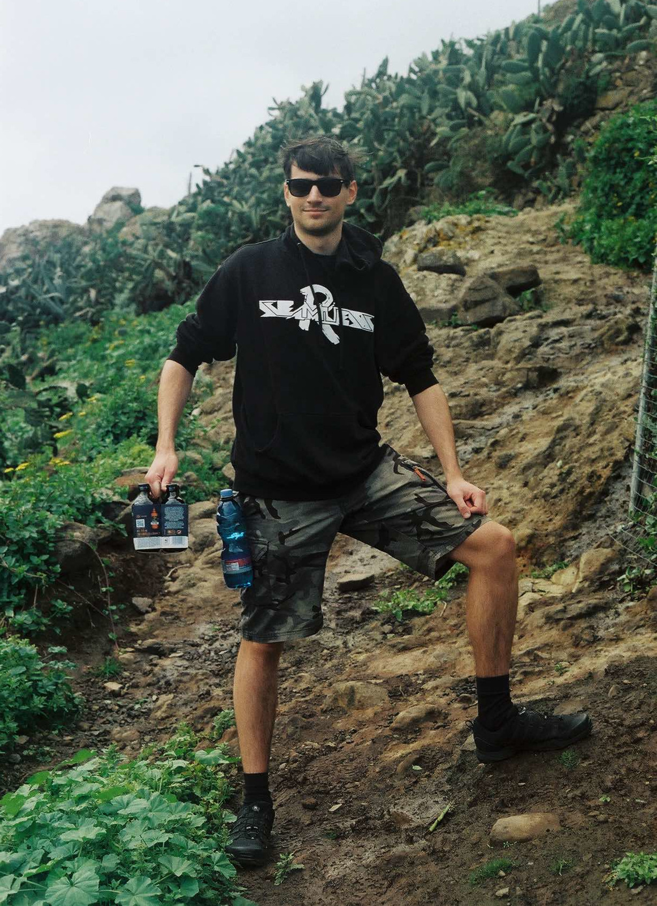

Home and links
Hi! I am Radek Mocek, and this is my corner of the interweb jungle. This website should serve as a kind of enhanced linktree: I will list all the notable things I have done in the digital world here, both to organise my thoughts and to provide an answer to the "Who are you?" question for anyone curious.
This section contains links to other places where you can find me. Use the navigation menu to browse the other, more specific sections.
- GitHub/RDMCz – personal GitHub profile
- GitHub/RadekMocek – GitHub for school projects, also used for hosting this website
- StackExchange
- YouTube/RDMCz – my main YT channel where I currently upload videogame clips and reupload stuff I found funny
- YouTube/HardtoFindMusic – (re)uploads of albums missing from YT and my own mixes, mostly ambient/alternative
- LastFM – music I listen to
- ČSFD [cz] – rating movies I've seen
- DatabázeKnih [cz] – rating (the few) books I've read
Videogames
Videogames are my passion. I enjoy playing them, but also discussing them and watching/reading reviews, essays and documentaries about their development and history. I have a trait that once I'm really captivated by some form of media, I feel the urge to contribute to it and create something of my own.
My journey into game development started with GameMaker, where I worked on a couple of projects. These were simple joke games for my friends or prototypes that never saw the light of day. I was still in elementary school, so I only had a slight idea of what I was doing. But I was learning, and most importantly, I was having fun. A few more years would pass before I released my first videogame, which I eventually made in Unity.
Cavimilation
Cavimilation is a simple 2D platformer roguelike that started life as my final project at high school. This project had a specific assignment and a fixed deadline, so I didn't spend any time at the drawing board. I created all the code, sprites and music (sounds were generated in BFXR), and in the end, there was a functioning videogame! The game has received quite a positive response, so after a little hiatus, I decided to add more features and release it on Steam.
Cavimilation was released in March 2023 and quickly got lost among the flood of other releases. The game wasn't that good or innovative to find its playerbase, and I also didn't put much effort into marketing it. However, it was a great learning experience for me. One learns a lot on the way from creating a new Unity project to releasing a fully functional game on Steam with its own store page, achievements, leaderboards, etc. Even though it's nothing jaw-dropping, I still think that there is fun to be had in Cavimilation! And as I like to say: "It's nothing special, but it's mine."
Misc
- FM Shock – 2D top-down melee/stealth videogame made in Unity, advergame concept for my faculty
- PG1 – 3D pong in Unity
- PG2 – 3D FPS demo written in C++ using OpenGL
- Completed videogames – list of games I've completed that I started writing down during the covid lockdown, I'm not counting repeated playthroughs
- My computer specs
My favorite videogames are Fallout: New Vegas, Metal Gear Solid V, Deus Ex series, Yakuza series, and games by Arkane Studios. My favorite tower is Sniper Monkey and my favorite hero is Etienne.
Coding and software
My desire to create games led me to learn how to code. Probably like most programmers, I prefer solving problems over writing boilerplate code. I enjoy working on videogames, desktop apps, and I look forward to tackling AdventOfCode every December. My favorite languages are C# and Python.
-
Desktop apps
- DiagramPche – Diagram language & editor concept implemented in Dear ImGui, egui, Qt
- mp32desc – WPF app for creating text summaries about offline audio libraries
- PoorListenersWorkbench – PySide app with tools for MP3 tramps
-
Android apps
- MyBeerDiary – Android app for keeping track of how many beers you had
-
IDE extensions
- SolarDim – A "slightly solarized" color theme for IDEs
- VSCodeMath2MDImage – VSCode extension for rendering LaTeX math into svg inside Markdown
-
Misc
- mad_plot_lib – Simple wrapper around matplotlib's pyplot
- Yappembler – ANTLR frontend & C# visitor for made-up language
Music
I've been through my pop era, dubstep era, metal era, and I'm currently in my industrial era. I really enjoy listening to music and discovering new artists. That's why I've always felt the urge to create my own music (same as with videogames). The thing is, unlike programming, making music is definitely not my "natural talent". That combined with my relatively obscure music taste is a perfect recipe for disaster. My desire was strong, however, and in 2025, after a long and challenging journey, I managed to release my first album!
To clarify, this is music made entirely on a computer using a DAW; I don't play any instruments. At first I tried creating music in FL Studio and other similar software. Learning how to use these DAWs wasn't a problem, but I was always overwhelmed by the number of options and plugins at my disposal and never really managed to do anything. When the time came to make music for Cavimilation, I forced myself to try again. After some failed attempts, I managed to make usable music for my videogame in OpenMPT. This is where my appreciation for music trackers began. I eventually ended up buying Renoise (what a beautiful piece of software), in which I made the first FilthwAre album.
FilthwAre
FilthwAre is my solo music project. It's electronic music that you probably wouldn't dance to in a club or play at a family barbecue. At the same time, it's not something super experimental that would lie at the bottom of the iceberg. Some tracks feature metal-inspired vocals. Give it a listen.
Misc
- Seen live – some of the bands I've seen live
IRL?
You already know my digital self, but how about my analog self? I am a

Česky?
Zdravíčko!
Aby to bylo kompletní, uvedu zde i své výstupy v češtině.
- MarkdownPeklo obsahuje odkazy na všechny veřejné Markdown dokumenty, které jsem sepsal.
- FNVCzFix – Rozpracovaná snaha o zlepšení českého překladu hry Fallout: New Vegas. K tomu bych se někdy rád vrátil.